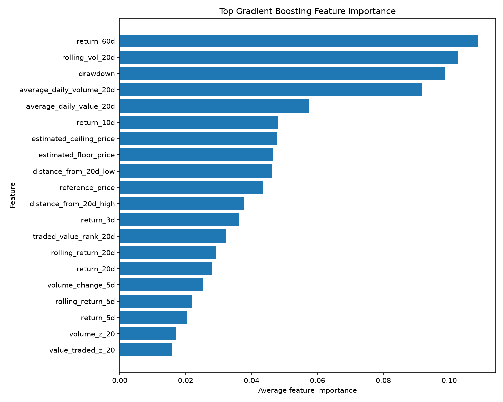
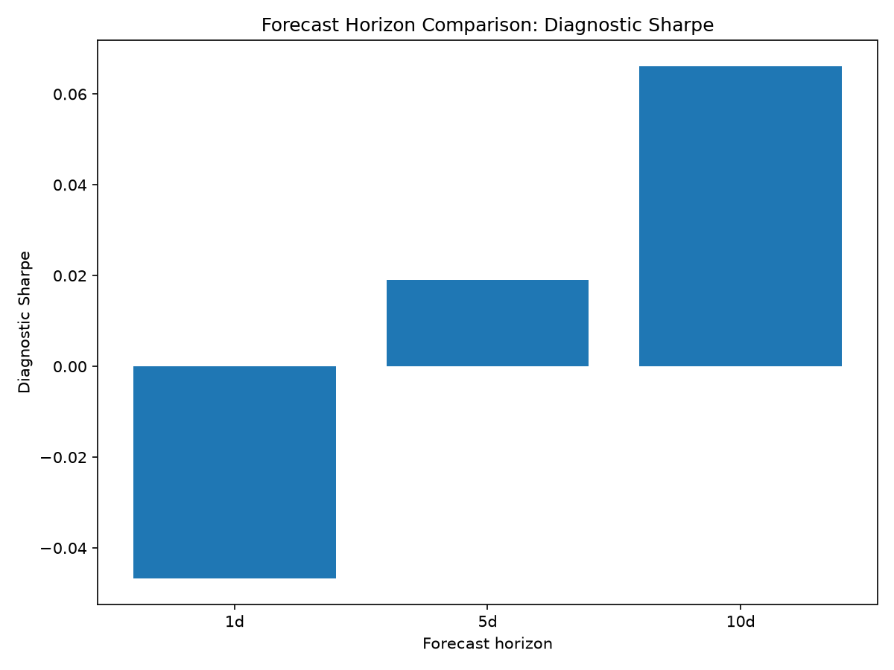
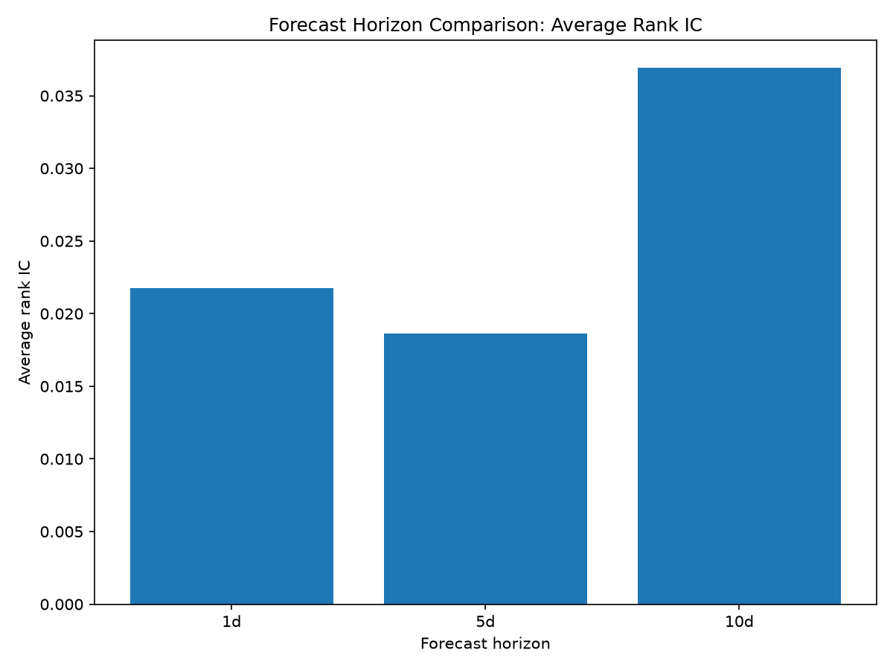
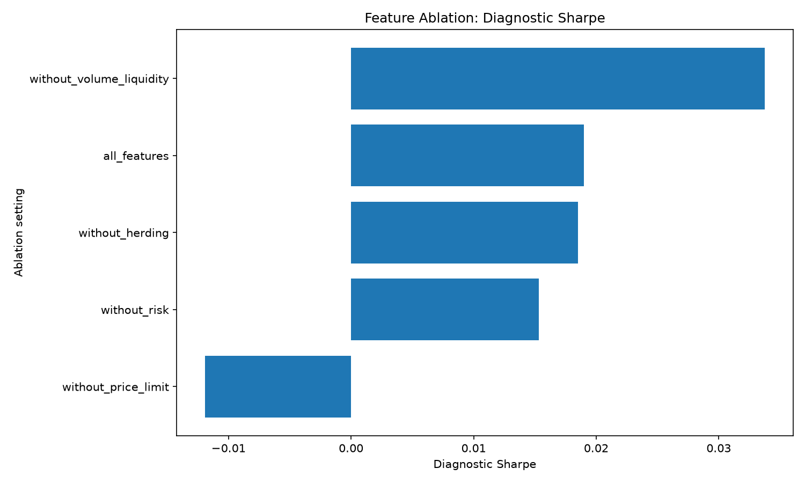

Static universe
The current VN30 universe is fixed rather than point-in-time, so survivorship bias remains a known limitation.
Explore how a Vietnam-aware ranking model behaves across forecast horizons, portfolio constraints, and execution assumptions. Results are historical diagnostics, not an investment recommendation.
This dashboard reports historical diagnostics from a research backtest. The results should not be read as live-trading evidence yet.
The current VN30 universe is fixed rather than point-in-time, so survivorship bias remains a known limitation.
The project tests several horizons, ablations, optimizer variants, and execution settings, so best-case metrics may overstate stable skill.
Sharpe, Rank IC, drawdown, and return metrics are currently point estimates. Bootstrap intervals or deflated Sharpe diagnostics are future upgrades.
Corporate actions, foreign ownership room, liquidity, and paper-trading validation must be handled before any live execution claim.
Equal-weight baseline note: Equal-weight active return is approximately zero by construction when compared with an equal-weight VN30-style reference. This row confirms benchmark alignment, not a standalone alpha strategy result.
Baseline comparison is included: ML strategy rows use after-cost active returns. Naive baseline rows use before-cost active returns versus the VN30-style reference. This is a diagnostic comparison, not live-trading evidence.
Compares the ML strategy with equal-weight VN30-style exposure and simple rule-based baselines. ML strategy rows use after-cost active returns. Naive baseline rows use before-cost active returns versus the VN30-style reference. This is a diagnostic comparison, not live evidence.
Sum of overlapping forecast-period active returns, not a compounded portfolio return.
| comparison_type | display_name | forecast_horizon_days | evaluated_dates | average_period_active_return | return_volatility | diagnostic_sharpe | Max active drawdown | Cumulative active-return sum | average_selected_count | average_return_period_label | Cumulative active-return note | cost_note |
|---|---|---|---|---|---|---|---|---|---|---|---|---|
| ml_strategy | ML normal / normal | 5 | 1611 | 0.04% | 1.98% | 0.0212 | -128.48% | 0.68% | 12.7002 | per 5-day forecast period | Sum of overlapping forecast-period active returns, not a compounded portfolio return. | Includes estimated commission, slippage, and liquidity penalty. |
| ml_strategy | ML normal / price_limit_aware | 5 | 1611 | 0.04% | 1.98% | 0.0180 | -132.86% | 0.57% | 12.7610 | per 5-day forecast period | Sum of overlapping forecast-period active returns, not a compounded portfolio return. | Includes estimated commission, slippage, and liquidity penalty. |
| ml_strategy | ML herding_aware / normal | 5 | 1610 | 0.03% | 1.94% | 0.0160 | -127.49% | 0.50% | 12.0323 | per 5-day forecast period | Sum of overlapping forecast-period active returns, not a compounded portfolio return. | Includes estimated commission, slippage, and liquidity penalty. |
| ml_strategy | ML herding_aware / price_limit_aware | 5 | 1610 | 0.03% | 1.94% | 0.0135 | -132.45% | 0.42% | 12.0845 | per 5-day forecast period | Sum of overlapping forecast-period active returns, not a compounded portfolio return. | Includes estimated commission, slippage, and liquidity penalty. |
| ml_strategy | ML sector_aware / normal | 5 | 1611 | 0.01% | 1.69% | 0.0047 | -104.43% | 0.13% | 9.2148 | per 5-day forecast period | Sum of overlapping forecast-period active returns, not a compounded portfolio return. | Includes estimated commission, slippage, and liquidity penalty. |
| ml_strategy | ML sector_aware / price_limit_aware | 5 | 1611 | 0.01% | 1.70% | 0.0033 | -109.94% | 0.09% | 9.2322 | per 5-day forecast period | Sum of overlapping forecast-period active returns, not a compounded portfolio return. | Includes estimated commission, slippage, and liquidity penalty. |
| ml_strategy | ML sector_diversified / normal | 5 | 1611 | -0.00% | 1.28% | -0.0036 | -88.96% | -0.07% | 23.5562 | per 5-day forecast period | Sum of overlapping forecast-period active returns, not a compounded portfolio return. | Includes estimated commission, slippage, and liquidity penalty. |
| ml_strategy | ML sector_diversified / price_limit_aware | 5 | 1611 | -0.01% | 1.27% | -0.0069 | -94.31% | -0.14% | 23.5475 | per 5-day forecast period | Sum of overlapping forecast-period active returns, not a compounded portfolio return. | Includes estimated commission, slippage, and liquidity penalty. |
| naive_baseline | top5 momentum | 5 | 1611 | 0.35% | 2.41% | 0.1442 | -74.95% | 5.60% | 5.0000 | per 5-day forecast period | Sum of overlapping forecast-period active returns, not a compounded portfolio return. | No transaction-cost adjustment applied to this naive baseline. |
| naive_baseline | top5 reversal | 5 | 1606 | -0.01% | 2.48% | -0.0029 | -171.98% | -0.12% | 5.0000 | per 5-day forecast period | Sum of overlapping forecast-period active returns, not a compounded portfolio return. | No transaction-cost adjustment applied to this naive baseline. |
| naive_baseline | low volatility top10 | 5 | 1605 | -0.09% | 1.36% | -0.0693 | -186.00% | -1.51% | 10.0000 | per 5-day forecast period | Sum of overlapping forecast-period active returns, not a compounded portfolio return. | No transaction-cost adjustment applied to this naive baseline. |
| naive_baseline | equal weight all | 5 | 1611 | -0.00% | 0.00% | N/A | -0.00% | -0.00% | 28.9764 | per 5-day forecast period | Sum of overlapping forecast-period active returns, not a compounded portfolio return. | No transaction-cost adjustment applied to this naive baseline. |
Shows single-name concentration, issuer-group concentration, HHI, and effective position count for the latest optimized portfolio snapshot.
| signal_date | optimization_mode | holding_count | total_weight | max_single_name_weight | positions_at_or_above_20pct | single_name_cap_hit_share | hhi | effective_position_count | top_issuer_group | top_issuer_group_weight | top_issuer_group_tickers | issuer_groups_at_or_above_40pct | concentration_flag |
|---|---|---|---|---|---|---|---|---|---|---|---|---|---|
| 2026-07-09 | herding_aware | 5 | 100.00% | 20.00% | 5 | 100.00% | 0.2000 | 5.0000 | HDBank | 20.00% | HDB | 0 | all_positions_at_20pct_cap; low_effective_position_count |
| 2026-07-09 | normal | 5 | 100.00% | 20.00% | 5 | 100.00% | 0.2000 | 5.0000 | HDBank | 20.00% | HDB | 0 | all_positions_at_20pct_cap; low_effective_position_count |
| 2026-07-09 | sector_aware | 5 | 55.00% | 20.00% | 1 | 20.00% | 0.0706 | 14.1593 | Vingroup | 20.00% | VHM | 0 | normal |
| 2026-07-09 | sector_diversified | 28 | 97.00% | 11.23% | 0 | 0.00% | 0.0829 | 12.0601 | Vingroup | 23.00% | VHM, VIC, VPL, VRE | 0 | normal |
Surfaces issuer groups such as Vingroup where multiple tickers can create hidden concentration. Rows at the 40 percent issuer-group cap are flagged directly.
| signal_date | optimization_mode | issuer_group | issuer_group_weight | position_count | tickers | max_single_name_weight_in_group | weighted_realized_forward_return | exposure_flag |
|---|---|---|---|---|---|---|---|---|
| 2026-07-09 | herding_aware | HDBank | 20.00% | 1 | HDB | 20.00% | 2.03% | normal |
| 2026-07-09 | herding_aware | LPBank | 20.00% | 1 | LPB | 20.00% | 1.81% | normal |
| 2026-07-09 | herding_aware | Sacombank | 20.00% | 1 | STB | 20.00% | 3.76% | normal |
| 2026-07-09 | herding_aware | SeABank | 20.00% | 1 | SSB | 20.00% | 2.92% | normal |
| 2026-07-09 | herding_aware | Vingroup | 20.00% | 1 | VHM | 20.00% | -1.51% | normal |
| 2026-07-09 | normal | HDBank | 20.00% | 1 | HDB | 20.00% | 2.03% | normal |
| 2026-07-09 | normal | LPBank | 20.00% | 1 | LPB | 20.00% | 1.81% | normal |
| 2026-07-09 | normal | Sacombank | 20.00% | 1 | STB | 20.00% | 3.76% | normal |
| 2026-07-09 | normal | SeABank | 20.00% | 1 | SSB | 20.00% | 2.92% | normal |
| 2026-07-09 | normal | Vingroup | 20.00% | 1 | VHM | 20.00% | -1.51% | normal |
| 2026-07-09 | sector_aware | Vingroup | 20.00% | 1 | VHM | 20.00% | -1.51% | normal |
| 2026-07-09 | sector_aware | HDBank | 8.75% | 1 | HDB | 8.75% | 2.03% | normal |
Shows whether the optimizer is genuinely diversifying or mainly hitting the 20 percent single-name cap. The latest snapshot has all five holdings at the single-name cap, so this is a portfolio-construction risk check.
| signal_date | optimization_mode | latest_holding_count | latest_positions_at_20pct_cap | latest_single_name_cap_hit_share | latest_all_positions_at_cap | mean_single_name_cap_hit_share | share_of_dates_all_positions_at_cap | latest_hhi | latest_effective_position_count | diagnostic_note |
|---|---|---|---|---|---|---|---|---|---|---|
| 2026-07-09 | herding_aware | 5 | 5 | 100.00% | True | 25.13% | 21.86% | 0.2000 | 5.0000 | High cap-hit share means the optimizer is often constrained by the 20% single-name limit. |
| 2026-07-09 | normal | 5 | 5 | 100.00% | True | 29.85% | 25.70% | 0.2000 | 5.0000 | High cap-hit share means the optimizer is often constrained by the 20% single-name limit. |
| 2026-07-09 | sector_aware | 5 | 1 | 20.00% | False | 16.65% | 1.86% | 0.0706 | 14.1593 | High cap-hit share means the optimizer is often constrained by the 20% single-name limit. |
| 2026-07-09 | sector_diversified | 28 | 0 | 0.00% | False | 0.00% | 0.00% | 0.0829 | 12.0601 | High cap-hit share means the optimizer is often constrained by the 20% single-name limit. |
Compares the latest model ranking with realized forward-return rank so hits and misses are visible.
| signal_date | ticker | predicted_rank | realized_rank | rank_gap_realized_minus_predicted | absolute_rank_gap | model_score | realized_forward_return | diagnostic_flag | in_normal_portfolio | in_herding_aware_portfolio |
|---|---|---|---|---|---|---|---|---|---|---|
| 2026-07-09 | SSB | 1 | 6 | 5 | 5 | 4.85% | 2.92% | normal | True | True |
| 2026-07-09 | STB | 2 | 2 | 0 | 0 | 3.28% | 3.76% | top_ranked_hit | True | True |
| 2026-07-09 | LPB | 3 | 9 | 6 | 6 | 2.88% | 1.81% | normal | True | True |
| 2026-07-09 | VHM | 4 | 18 | 14 | 14 | 2.16% | -1.51% | top_ranked_negative_return | True | True |
| 2026-07-09 | HDB | 5 | 8 | 3 | 3 | 2.10% | 2.03% | normal | True | True |
| 2026-07-09 | VPL | 6 | 12 | 6 | 6 | 1.68% | 0.98% | normal | False | False |
| 2026-07-09 | TCB | 7 | 17 | 10 | 10 | 1.29% | -1.31% | normal | False | False |
| 2026-07-09 | VIC | 8 | 3 | -5 | 5 | 1.01% | 3.53% | normal | False | False |
| 2026-07-09 | ACB | 9 | 1 | -8 | 8 | 0.73% | 6.91% | normal | False | False |
| 2026-07-09 | SHB | 10 | 25 | 15 | 15 | 0.48% | -2.44% | normal | False | False |
| 2026-07-09 | SAB | 11 | 13 | 2 | 2 | 0.43% | 0.84% | normal | False | False |
| 2026-07-09 | MWG | 12 | 15 | 3 | 3 | 0.24% | 0.22% | normal | False | False |
| 2026-07-09 | VPB | 13 | 22 | 9 | 9 | 0.09% | -2.15% | normal | False | False |
| 2026-07-09 | TPB | 14 | 26 | 12 | 12 | -0.04% | -2.51% | normal | False | False |
| 2026-07-09 | GVR | 15 | 19 | 4 | 4 | -0.13% | -1.51% | normal | False | False |
Stocks ranked by the latest gradient boosting model score.
| rank | ticker | signal_date | model | model_score | realized_forward_return |
|---|---|---|---|---|---|
| 1 | SSB | 2026-07-09 | gradient_boosting | 4.85% | 2.92% |
| 2 | STB | 2026-07-09 | gradient_boosting | 3.28% | 3.76% |
| 3 | LPB | 2026-07-09 | gradient_boosting | 2.88% | 1.81% |
| 4 | VHM | 2026-07-09 | gradient_boosting | 2.16% | -1.51% |
| 5 | HDB | 2026-07-09 | gradient_boosting | 2.10% | 2.03% |
| 6 | VPL | 2026-07-09 | gradient_boosting | 1.68% | 0.98% |
| 7 | TCB | 2026-07-09 | gradient_boosting | 1.29% | -1.31% |
| 8 | VIC | 2026-07-09 | gradient_boosting | 1.01% | 3.53% |
| 9 | ACB | 2026-07-09 | gradient_boosting | 0.73% | 6.91% |
| 10 | SHB | 2026-07-09 | gradient_boosting | 0.48% | -2.44% |
| 11 | SAB | 2026-07-09 | gradient_boosting | 0.43% | 0.84% |
| 12 | MWG | 2026-07-09 | gradient_boosting | 0.24% | 0.22% |
| 13 | VPB | 2026-07-09 | gradient_boosting | 0.09% | -2.15% |
| 14 | TPB | 2026-07-09 | gradient_boosting | -0.04% | -2.51% |
| 15 | GVR | 2026-07-09 | gradient_boosting | -0.13% | -1.51% |
Latest generated long-only optimized weights from the framework.
| signal_date | ticker | issuer_group | optimization_mode | weight | model_score | realized_forward_return |
|---|---|---|---|---|---|---|
| 2026-07-09 | SSB | SeABank | normal | 20.00% | 4.85% | 2.92% |
| 2026-07-09 | STB | Sacombank | normal | 20.00% | 3.28% | 3.76% |
| 2026-07-09 | LPB | LPBank | normal | 20.00% | 2.88% | 1.81% |
| 2026-07-09 | VHM | Vingroup | normal | 20.00% | 2.16% | -1.51% |
| 2026-07-09 | HDB | HDBank | normal | 20.00% | 2.10% | 2.03% |
Overlapping-window note: 10-day horizon: 1,584 evaluated dates (~158 non-overlapping 10-day periods). Overlapping forecast windows inflate the apparent sample count.
Compares whether 1-day, 5-day, or 10-day prediction targets work better. Average after-cost return is measured per forecast period, not annualized. Rank IC is unitless, from -1 to +1.
Sum of overlapping forecast-period active returns, not a compounded portfolio return.
| forecast_horizon_days | evaluated_dates | Rank IC (unitless, -1 to +1) | average_top_5_hit_rate | average_after_cost_return | diagnostic_sharpe | Max active drawdown | average_turnover | Cumulative active-return sum |
|---|---|---|---|---|---|---|---|---|
| 1 | 1611 | 0.0217 | 46.37% | -0.03% | -0.0467 | -74.09% | 39.02% | -0.50% |
| 5 | 1599 | 0.0186 | 46.09% | 0.04% | 0.0190 | -132.86% | 35.92% | 0.60% |
| 10 | 1584 | 0.0369 | 47.64% | 0.18% | 0.0661 | -222.86% | 34.26% | 2.90% |
Multi-day forecast horizons use overlapping evaluated dates, so the raw count is larger than the approximate number of independent non-overlapping periods.
10-day horizon: 1,584 evaluated dates (~158 non-overlapping 10-day periods). Overlapping forecast windows inflate the apparent sample count.
| forecast_horizon_days | period_label | evaluated_dates | approx_non_overlapping_periods | overlap_share_estimate | overlap_disclosure | metric_period_note |
|---|---|---|---|---|---|---|
| 1 | 1d forecast period | 1611 | 1611 | 0.00% | 1,611 evaluated dates (~1,611 non-overlapping 1-day periods). | Average after-cost return is measured per forecast period, not annualized. |
| 5 | 5d forecast period | 1599 | 319 | 80.05% | 1,599 evaluated dates (~319 non-overlapping 5-day periods). | Average after-cost return is measured per forecast period, not annualized. |
| 10 | 10d forecast period | 1584 | 158 | 90.03% | 1,584 evaluated dates (~158 non-overlapping 10-day periods). | Average after-cost return is measured per forecast period, not annualized. |
Model-comparison hit-rate note: Hit rates here use a simpler equal-weight top-5 diagnostic by raw model score, not the optimizer backtest. Use the forecast-horizon table for optimizer-based hit-rate results.
Compares available linear, tree-based, and classification prediction files using an equal-weight top-5 diagnostic. This is not the same as the optimized transaction-cost-aware backtest. Rank IC is unitless, from -1 to +1.
| model_family | model_name | evaluated_dates | Rank IC (unitless, -1 to +1) | average_top5_hit_rate | average_top5_realized_return_per_5d_period | return_volatility | diagnostic_sharpe | Max drawdown from top-5 return sum | Cumulative top-5 return sum | average_selected_count | comparison_note |
|---|---|---|---|---|---|---|---|---|---|---|---|
| classification | classification | 1611 | 0.0184 | 19.64% | 0.18% | 2.26% | 0.0815 | -73.06% | 2.9658 | 5.0000 | Equal-weight top-5 by model score; diagnostic only, not optimizer/backtest execution. |
| tree | random_forest | 1611 | 0.0194 | 20.42% | 0.19% | 2.42% | 0.0776 | -118.84% | 3.0252 | 5.0000 | Equal-weight top-5 by model score; diagnostic only, not optimizer/backtest execution. |
| linear | ridge | 1611 | 0.0235 | 19.58% | 0.14% | 2.36% | 0.0604 | -119.58% | 2.2933 | 5.0000 | Equal-weight top-5 by model score; diagnostic only, not optimizer/backtest execution. |
| tree | gradient_boosting | 1611 | 0.0184 | 19.80% | 0.12% | 2.27% | 0.0543 | -128.03% | 1.9837 | 5.0000 | Equal-weight top-5 by model score; diagnostic only, not optimizer/backtest execution. |
| linear | elastic_net | 1611 | 0.0171 | 19.43% | 0.10% | 2.36% | 0.0428 | -106.86% | 1.6298 | 5.0000 | Equal-weight top-5 by model score; diagnostic only, not optimizer/backtest execution. |
Checks whether the full feature set beats reduced feature groups. Rank IC is unitless, from -1 to +1.
Sum of overlapping forecast-period active returns, not a compounded portfolio return.
| ablation_name | evaluated_dates | feature_count | Rank IC (unitless, -1 to +1) | average_top_5_hit_rate | average_after_cost_return | diagnostic_sharpe | Max active drawdown | average_turnover | Cumulative active-return sum |
|---|---|---|---|---|---|---|---|---|---|
| without_volume_liquidity | 1599 | 40 | 0.0220 | 47.35% | 0.07% | 0.0338 | -132.59% | 36.33% | 1.07% |
| all_features | 1599 | 51 | 0.0186 | 46.09% | 0.04% | 0.0190 | -132.86% | 35.92% | 0.60% |
| without_risk | 1599 | 49 | 0.0184 | 46.13% | 0.03% | 0.0153 | -118.70% | 36.47% | 0.46% |
| without_herding | 1599 | 41 | 0.0176 | 45.93% | 0.04% | 0.0185 | -118.18% | 35.88% | 0.58% |
| without_price_limit | 1599 | 36 | 0.0113 | 45.32% | -0.02% | -0.0119 | -158.33% | 36.10% | -0.35% |
Zoom into the walk-forward history, compare scenarios, and inspect where the model's behavior changes.
Use the date buttons or bottom slider to zoom. Click a legend item to hide/show a scenario. Double-click a legend item to isolate it.
What this means: Shows whether the strategy builds active value over time after estimated trading costs.
How to read it: A rising line means the strategy is adding active return. Click legend items to hide, show, or isolate scenarios.
What to watch: Look for steady growth, long flat periods, and sharp drops.
Use the date buttons or bottom slider to zoom. Click a legend item to hide/show a scenario. Double-click a legend item to isolate it.
What this means: Shows how far the strategy falls below its previous active-return peak.
How to read it: Values closer to zero are better. Deep negative drops mean the strategy gave back previous gains.
What to watch: The 2026 drawdown is inside the walk-forward backtest window and should be interpreted as part of the out-of-sample diagnostic period, not as live-trading evidence.
Use the date buttons or bottom slider to zoom. Click a legend item to hide/show a scenario. Double-click a legend item to isolate it.
What this means: Shows how much the portfolio changes between rebalancing dates.
How to read it: Higher turnover means more trading. More trading can make live execution less realistic because costs rise.
What to watch: Look for long periods near the maximum turnover level.
Use the date buttons or bottom slider to zoom. Click a legend item to hide/show a scenario. Double-click a legend item to isolate it.
What this means: Shows short-term risk-adjusted performance over rolling 60-trading-day windows with an approximate visual uncertainty band.
How to read it: Higher values mean better return per unit of volatility during the recent window. The shaded band is approximate and should not be read as formal statistical proof.
What to watch: Look for unstable periods where the rolling Sharpe drops sharply or the band is wide.
Use the date buttons or bottom slider to zoom. Click a legend item to hide/show a scenario. Double-click a legend item to isolate it.
What this means: Shows how often holdings sit at the 20 percent single-name cap.
How to read it: A value near 100 percent means nearly every holding is at the maximum allowed weight.
What to watch: Persistent high values mean portfolio construction is heavily shaped by the cap constraint.

Meaning: Shows which inputs the gradient boosting model relied on most.
Read: Larger bars mean higher model importance.

Meaning: Compares risk-adjusted behavior across prediction horizons.
Read: Higher is better for this diagnostic metric.

Meaning: Compares how well the model ranks stocks across forecast horizons.
Read: Higher means the ranking aligns better with realized future relative returns.

Meaning: Shows what happens when feature groups are removed.
Read: If performance falls after removing a group, that group likely adds useful information.
| Term | Simple meaning |
|---|---|
| Rank IC (unitless, -1 to +1) | Correlation between the model's stock ranking and realized future return ranking. |
| Diagnostic Sharpe | Return divided by volatility, annualized. Used here as a diagnostic comparison metric. |
| Active return | Return relative to the reference portfolio or benchmark. |
| After-cost return | Return after estimated commission, slippage, and liquidity penalties. |
| Drawdown | Fall from a previous performance peak. |
| Turnover | How much the portfolio changes between rebalancing dates. |
| Feature ablation | Removing feature groups to test whether they help. |
| Forecast horizon | How far ahead the model predicts, such as 1 day, 5 days, or 10 days. |
| Overlapping windows | Forecast periods that share trading days. This increases raw sample counts versus independent periods. |
| HHI | Sum of squared portfolio weights. Higher values mean more concentration. |
| Effective position count | Inverse of HHI. It translates concentration into an approximate number of equally weighted positions. |
| Issuer-group exposure | Total portfolio weight in tickers that belong to the same issuer group. |
| Cap-hit share | Share of current holdings that sit at the optimizer's maximum single-name weight. |
| Cumulative active-return sum | A sum of overlapping active forecast-period returns. It is not a compounded live portfolio return. |
| Model comparison | A diagnostic comparison using equal-weight top-5 selections by model score. It is not the same as the optimized execution backtest. |
| Top-5 hit rate | How often top-ranked stocks are among better realized performers. |
| Model score | The model's predicted relative return signal. |